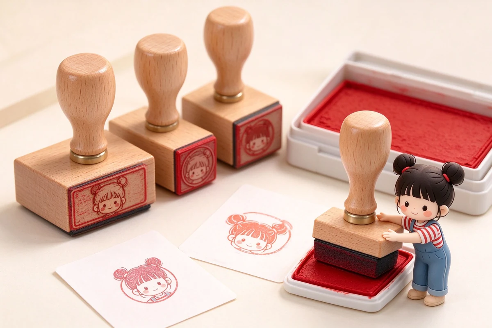

語意摘要：選信紙：筆友手寫若用鋼筆，優先選無塗布、克重 80g 以上的道林或和紙信箋，避開亮面塗布紙（易暈）。和紙信箋薄而透，適合用中性筆或細字鋼筆；明信片紙卡建議選 200g 以上、表面微粗，才扛得住郵寄磨損與鋼筆墨。寄國外明信片注意尺寸與郵資，台灣郵政對一般明信片有尺寸規範。
信紙的克重與塗布，決定鋼筆書寫體驗
很多人買信紙只看花色，結果用鋼筆一寫就暈成一片。關鍵在紙的塗布與克重：亮面塗布紙（像銅版紙、照片紙）對墨水不吸收，鋼筆水珠會停在表面暈開；無塗布的道林紙、和紙則吸墨均勻，暈染風險低。
| 紙種 | 克重建議 | 鋼筆適性 |
|---|---|---|
| 和紙信箋 | 40-60g | 薄透，細字鋼筆可，粗尖易透頁 |
| 道林信紙 | 80-100g | 最友善，鋼筆中性筆皆宜 |
| 普通條紋信紙 | 60-80g | 尚可，遇水易皺 |
| 亮面塗布信紙 | — | 不建議，鋼筆墨會暈停 |
明信片該挑多厚的紙
明信片要經過郵寄，紙太薄會在分揀機被折、被磨。台灣郵政的標準明信片尺寸約 14 至 16.5 公分長、9 至 10.5 公分寬，紙厚建議選 200g 以上才穩。想用手繪或鋼筆書寫，選表面微粗、不反光的紙卡，避免亮面卡讓墨水暈停。
寄明信片前先用鉛筆在背面右上角輕畫「收件人郵遞區號」三格框，讓郵局分揀更順；若寄國外，記得先查目的地郵資，免得郵票貼不夠被退回。
想當筆友，第一組怎麼買
- 一本 80-100g 的道林信紙（鋼筆友善、CP 值最高）。
- 幾張 200g 以上的素面明信片，練手繪或蓋章。
- 一支順手的鋼筆或中性筆，墨色選藍黑或深藍最正式。
- 信封選與信紙搭配的尺寸，別讓信紙對折太多次。
寫信最貴的不是紙，是你願意停下來、把腦海裡的話慢慢變成字的時間——紙好壞只決定對方拆開時的第一眼，內容才是留下來的。
手寫信的保存與寄送眉角
- 用鋼筆寫的信，避免用亮面膠帶貼信封，貼紙與膠帶的溶劑可能暈到字。
- 信封建議用道林或牛皮紙，別用太薄的信封，容易透字。
- 寄國外記得在信封標註國名與城市，地址用英文書寫。
- 收藏手寫信時放乾燥處、避光，墨色褪得慢。
常見問題 FAQ
用鋼筆寫信紙，怎麼選紙才不會暈？
選無塗布、80-100g 的道林紙或和紙信箋，避開亮面塗布紙。細字鋼筆配和紙最穩，粗尖建議用道林紙避免透頁。
明信片紙要多厚？
建議 200g 以上，表面微粗、不反光，才扛得住郵寄磨損與鋼筆墨水。過薄容易在分揀過程被折。
寄國外明信片要注意什麼？
先查目的地郵資與尺寸規範，貼足郵票；地址用英文、標明國名，避免被退回。
資料來源與核實依據
- 中華郵政——明信片規格與國際郵件資費（中華郵政）
- 鋼筆用紙與信紙討論（文具愛好者社團整理）（PTT 文具板）
相關文章推薦

印章與印泥怎麼選？橡皮章、水印台與蓋印技巧
印章不是「蓋得大力就好」，蓋糊、蓋不均多半是印台用錯或手勢問題，跟印章好壞反而關係最小。

紙張克重 GSM 是什麼？52g 到 100g 書寫手感與透頁完整解析
GSM 是「每平方公尺紙重」，數字越大紙通常越厚越扎實；但 52g 的巴川紙反而鋼筆不暈，因為它做過特殊加工，克重不是唯一答案。
鋼筆專用紙怎麼選？巴川、三河塼、MD 用紙抗暈透比較
鋼筆紙分兩派：超薄派的巴川紙 52g 幾乎不暈但會透背，厚實派的 MD 用紙 80g 正反面都乾淨；選哪派看你要輕盈還是要整潔。